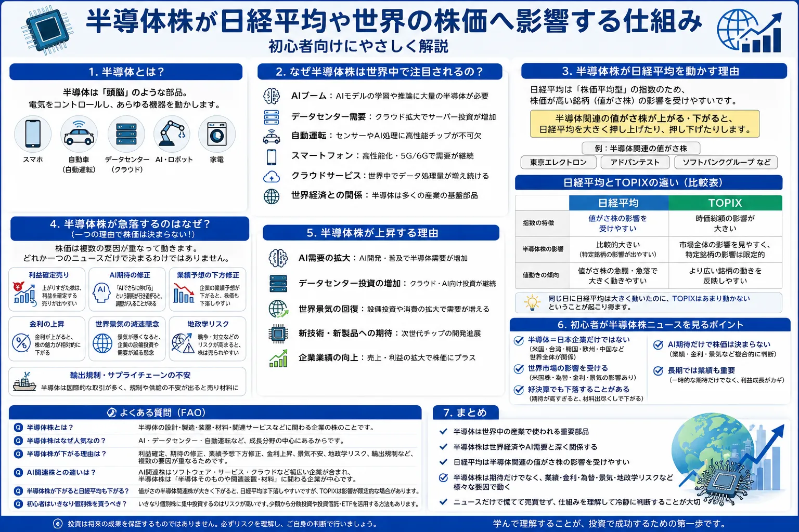

話題・トレンド
半導体株とは？なぜ日経平均や世界の株価を大きく動かすの？初心者向けに解説
半導体株は、AIブームやデータセンター投資のニュースで注目されやすく、日経平均や世界の株価指数を大きく動かすことがあります。ただし、株価はAIへの期待だけで決まるものではありません。世界景気、金利、為替、企業業績、地政学リスクなど、複数の要因を一緒に見ることが大切です。
Overview
半導体株と株価指数の関係を最初に整理

- 半導体は、現代の電子機器やデジタルサービスを支える重要部品です。
- 半導体関連企業の株価は、世界の需要見通しや設備投資の変化を反映しやすい傾向があります。
- 日経平均では、株価水準の高い半導体関連銘柄が指数に大きな影響を与える場合があります。
- 半導体株の上昇・下落は、一つのニュースだけでなく複数要因の組み合わせで起こります。
Definition
半導体株とは？
半導体株を理解するには、最初に「半導体とは何か」と「どのような企業が半導体株に含まれるのか」を分けて考えると分かりやすくなります。
半導体とは何か
電気を通す量を制御する電子部品
半導体は、情報の計算・記憶・制御・通信などを行うために使われる電子部品です。小さな部品ですが、スマートフォン、パソコン、自動車、家電、通信機器、工場設備など、非常に多くの製品に組み込まれています。
半導体株とは
半導体産業に関わる企業の株式
半導体の設計、製造、製造装置、材料、検査、組み立てなどに関わる企業の株式を、まとめて半導体株と呼びます。同じ半導体株でも、担当する工程や顧客、得意分野は企業ごとに異なります。
世界中で使われる重要部品
半導体は特定の業界だけで使われる部品ではありません。AIの計算処理、スマートフォンの通信や画面制御、自動車の安全機能、家電の制御、データセンターのサーバーなど、世界中の産業を横断して利用されています。そのため、半導体需要の変化は、一つの企業だけでなく世界経済全体の動きと結びつきやすくなります。
- AI
- スマートフォン
- 自動車
- 家電
- データセンター
- 産業機器
- 通信設備
- クラウドサービス
Why It Matters
なぜ半導体株は世界中で注目されるの？
半導体株が注目される理由は、半導体が成長産業の土台となる部品だからです。新しいサービスや製品が広がるほど、計算処理・記憶・通信を担う半導体の需要も増えやすくなります。
AIブーム
生成AIや機械学習には大量の計算処理が必要です。高性能な半導体や関連設備への需要拡大が期待されると、関連株にも資金が集まりやすくなります。
データセンター需要
AIやクラウドサービスを動かすためには、多数のサーバーを置くデータセンターが必要です。設備投資の拡大は半導体需要の増加につながります。
自動運転・電動化
自動車には運転支援、センサー、電力制御、通信など多くの半導体が使われます。高機能化が進むほど搭載量が増える可能性があります。
スマートフォン
スマートフォンには演算、記憶、通信、カメラ制御など多くの半導体が入っています。販売台数や買い替え需要も業績に影響します。
クラウドサービス
企業が自社設備ではなくクラウドを利用する流れは、サーバーやネットワーク機器向け半導体の需要と関係します。
世界経済との関係
半導体は幅広い産業に使われるため、受注や在庫の動きが世界景気の強弱を映すことがあります。そのため投資家の注目度も高くなります。
注意点：需要が伸びる産業だからといって、半導体株が常に上がるわけではありません。成長期待がすでに株価へ織り込まれている場合や、供給過剰・在庫調整が起きる場合もあります。
Nikkei Average
半導体株が日経平均を動かす理由
日経平均株価は、採用銘柄の株価をもとに計算する「株価平均型」の指数です。そのため、時価総額の大きさだけでなく、1株あたりの株価水準が高い銘柄、いわゆる値がさ株の値動きが指数へ強く表れやすい特徴があります。
日経平均は株価平均型
日経平均は、日本を代表する225銘柄で構成されますが、単純に「日本企業全体の時価総額」を表しているわけではありません。株価水準が高い銘柄の上昇・下落が、指数を大きく動かす場合があります。
値がさ株の影響を受けやすい
半導体関連企業には、株価水準が高く、日経平均への寄与度が大きくなりやすい銘柄があります。複数の関連銘柄が同じ方向へ大きく動くと、日経平均全体も強く上昇・下落して見えることがあります。
TOPIXとは値動きが違う場合がある
TOPIXは時価総額の影響を強く受ける指数です。そのため、半導体関連の値がさ株だけが大きく動いた日には、日経平均とTOPIXの上昇率・下落率に差が出ることがあります。
| 比較項目 | 日経平均 | TOPIX |
|---|---|---|
| 指数の特徴 | 株価平均型 | 時価総額加重型 |
| 影響を受けやすい要素 | 値がさ株の影響を受けやすい | 時価総額の大きい企業の影響が大きい |
| 半導体株との関係 | 半導体関連の値がさ株の影響が比較的大きくなりやすい | 市場全体の広がりを確認しやすい |
| 初心者の見方 | 一部の大型・値がさ株が指数を押し上げていないか確認する | 幅広い銘柄が上がっているかを確認する |
※ スマートフォンでは横にスクロールできます。
日経平均が上昇していても、すべての日本株が上がっているとは限りません。反対に、日経平均が半導体株の下落で弱く見えても、TOPIXや他業種の銘柄が底堅い場合があります。複数の指数を見比べると、市場全体の状態を判断しやすくなります。
Downside Factors
半導体株が急落するのはなぜ？
半導体株は成長期待が大きい反面、期待が少し変化しただけでも株価が大きく動くことがあります。重要なのは、一つの理由で株価は決まらないと理解することです。
利益確定売り
上昇後に売りが増える
短期間で株価が大きく上昇すると、利益を確定する投資家が増えます。悪材料がなくても売りが優勢になることがあります。
AI期待の修正
期待が高すぎると反動が出やすい
AI需要が続いていても、市場予想ほど強くないと判断されると、期待の修正で株価が下落する場合があります。
業績予想
好決算でも見通し次第で下がる
過去の決算が良くても、次の四半期や通期見通しが市場期待に届かなければ、株価が下がることがあります。
金利
高金利は成長株の評価を抑える場合がある
金利が上がると、将来利益への期待が大きい成長株の評価が下がりやすくなる場合があります。
世界景気
需要減少や在庫調整が意識される
景気減速でスマートフォンや自動車、設備投資が弱くなると、半導体需要の減少が警戒されます。
地政学・輸出規制
供給網や販売先への不安
生産拠点の集中、国際対立、輸出規制などは、部品調達・生産・販売に影響する可能性があります。
株価が下落した日に「金利が原因」「決算が原因」と一つだけに決めつけるのは注意が必要です。実際には、利益確定売り、期待の修正、為替、指数連動の売買、市場全体のリスク回避などが同時に重なることがあります。
Upside Factors
半導体株が上昇する理由
半導体株が上昇するときも、AIという言葉だけでなく、需要・設備投資・企業業績・世界景気などの裏付けを確認することが大切です。
-
AI需要が拡大する
高性能な計算処理を行う半導体や、周辺装置・材料への需要が増える期待につながります。
-
データセンター投資が増える
クラウド事業者などがサーバーや通信設備へ積極的に投資すると、半導体関連企業の受注拡大が期待されます。
-
世界景気が改善する
スマートフォン、自動車、家電、産業機器などの販売回復が半導体需要を押し上げる可能性があります。
-
新技術・新製品が登場する
省電力化、高性能化、小型化などの技術進歩は、新しい需要や買い替え需要につながる場合があります。
-
企業業績が市場予想を上回る
売上高・利益・受注・今後の見通しが市場の予想を上回ると、株価が上昇しやすくなります。
News Checklist
初心者が半導体株ニュースを見るポイント
半導体株のニュースは専門用語が多く、値動きも速いため、見出しだけで判断しないことが重要です。次のポイントを順番に確認すると整理しやすくなります。
半導体＝日本企業だけではない
設計、製造、装置、材料、検査などの供給網は世界中につながっています。海外企業の決算や設備投資計画が、日本の関連株へ影響することもあります。
世界市場の影響を受ける
米国株市場、世界景気、海外の金利、為替、各国の規制なども半導体株へ影響します。日本市場だけを見ても全体像がつかみにくい場合があります。
好決算でも下落することがある
株価は過去の実績よりも、今後の見通しや市場予想との差を重視して動くことがあります。好決算でも期待が高すぎれば、材料出尽くしで下落する場合があります。
AI期待だけで株価は決まらない
AI需要が強くても、金利上昇、為替変動、コスト増加、規制、供給過剰などが株価の重しになる場合があります。
長期では業績も重要
短期的には期待やニュースで動いても、長期的には売上高、利益、競争力、財務状況、設備投資の回収などが重要になります。
- ニュースの見出しだけで売買を決めない
- 上昇・下落の理由を一つに限定しない
- 日経平均だけでなくTOPIXや海外市場も見る
- 企業の決算と今後の見通しを分けて確認する
- 自分が理解できない値動きには無理に参加しない
Related Articles
関連する話題・基礎知識
半導体株の値動きを理解するには、株価指数・金利・為替・投資商品の基礎も一緒に確認すると理解が深まります。
FAQ
半導体株に関するよくある質問
-
半導体株とは？
半導体の設計、製造、製造装置、材料、検査などに関わる企業の株式をまとめて半導体株と呼びます。同じ半導体株でも、企業によって担当工程や収益構造は異なります。 -
半導体株はなぜ人気なの？
AI、データセンター、スマートフォン、自動車、家電、クラウドサービスなど、幅広い成長分野で半導体が使われるためです。将来の需要拡大への期待が集まりやすい一方、期待が高まりすぎると値動きも大きくなります。 -
半導体株が下がる理由は？
利益確定売り、AI期待の修正、業績見通し、金利、世界景気、為替、地政学リスク、輸出規制など複数の要因があります。一つの理由だけで株価が決まるわけではありません。 -
AI関連株との違いは？
半導体株は半導体の設計・製造・装置・材料などに関わる企業を指します。AI関連株は、半導体だけでなく、ソフトウェア、クラウド、データセンター、通信、業務効率化サービスなどAI活用に関わる幅広い企業を含みます。 -
半導体株が下がると日経平均も下がる？
必ず下がるわけではありません。ただし、日経平均は株価平均型で、半導体関連の値がさ株の影響を受けやすいため、複数の関連銘柄が大きく下落すると指数の下押し要因になる場合があります。 -
初心者はいきなり個別株を買うべき？
ニュースで話題だからという理由だけで急いで買う必要はありません。個別株は値動きが大きくなる場合があるため、事業内容、業績、株価水準、リスクを確認し、少額投資や分散投資も含めて慎重に判断することが大切です。
Summary
まとめ｜半導体株は世界経済と日経平均を理解する重要テーマ
- 半導体はAI・スマートフォン・自動車・家電・データセンターなど世界中の産業で使われる重要部品です。
- 半導体株は世界経済やAI需要、企業の設備投資と深く関係します。
- 日経平均は株価平均型のため、半導体関連の値がさ株の影響を受けやすい場合があります。
- 半導体株は期待だけでなく、企業業績、金利、為替、世界景気、地政学リスク、輸出規制など複数の要因で動きます。
- ニュースだけで慌てて売買せず、株価が動く仕組みと自分が負えるリスクを理解することが大切です。
Next Step
株価指数や証券口座の基礎も一緒に確認する
半導体株だけを見るのではなく、日経平均とTOPIXの違い、金利や為替の影響、個別株と投資信託・ETFの違いも理解すると、ニュースを落ち着いて判断しやすくなります。
ご利用にあたっての注意事項
本記事は一般的な情報提供と金融教育を目的としており、特定の企業・銘柄・ETF・証券会社の推奨や、投資の勧誘を目的としたものではありません。株式や投資信託などの金融商品は元本保証がなく、相場変動、為替変動、信用状況、制度変更などにより損失が生じる場合があります。取引を行う際は、最新の公式情報、契約締結前交付書面、目論見書などを確認し、ご自身の判断と責任で行ってください。